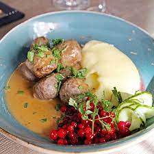

Swedish Meatballs

The swedish meatballs are part of traditional Swedish Cuisine. Best served with mashed potatoes, lingonberry jam
and sliced halfpickled cucumber, it's the perfect meal for anyone who's hungry, and kids love
it! This dish has later been popularised by being the
main course of the restaurants of IKEA stores around the world. This recipe serves about 4 but
can be altered to better suit the hungry by adding a bit of mince.
Here is the list of ingredients:
- 1/2dl Bread Crumbs
- 1dl Milk
- 500g Beef & Pork Mince
- 1/2 Finely Chopped Onion
- 1 Egg
- 1tsp Salt
- Ground Pepper
- 1/2tsp Sugar
- Butter
Instructions:
- Whisk together milk and bread crumbs. Let it swell for 10 minutes.
- Add meat mince, onion, egg, salt, pepper and sugar to the bowl and thoroughly work it all together.
- Moisten your hands with cold water and roll small balls out of the meat mixture. should be just slightly
smaller than a golfball.
- Fry the meatballs in a generous amount of butter. Shake the pan every so often to keep the meatballs round.
- Serve with mashed potatoes and gravy. If you have lingonberry jam to spare, this is the time to use it!